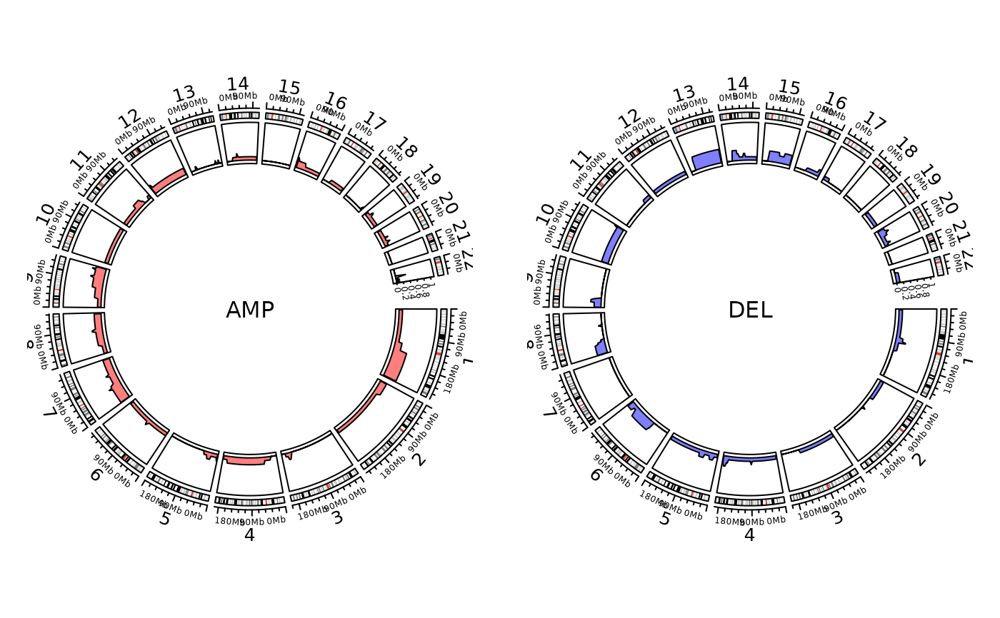
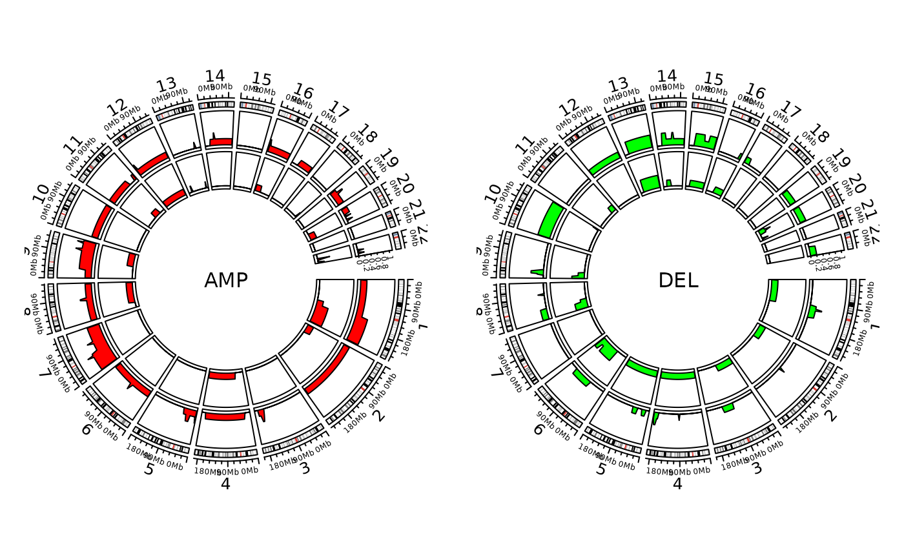

R/show_cn_freq_circos.R
show_cn_freq_circos.RdShow Copy Number Variation Frequency Profile with Circos
a CopyNumber object or a data.frame containing
at least 'chromosome', 'start', 'end', 'segVal', 'sample' these columns.
a named list or a column name for specifying groups.
copy number value cutoff for splitting data into AMP and DEL.
The values equal to cutoff are discarded. Default is 2, you can also set
a length-2 vector, e.g. c(2, 2).
an integer to control the resolution.
When it is 1 (default), compute frequency in each cytoband.
When it is 2, use compute frequency in each half cytoband.
length-2 titles for AMP and DEL.
chromosomes start with 'chr'.
genome build version, used when data is a data.frame, should be 'hg19' or 'hg38'.
length-2 colors for AMP and DEL.
default is TRUE, show ideogram.
track height in mm unit.
ideogram height in mm unit.
other parameters passing to circlize::circos.genomicLines.
Nothing.
# \donttest{
load(system.file("extdata", "toy_copynumber.RData",
package = "sigminer", mustWork = TRUE
))
show_cn_freq_circos(cn)
#> Plotting AMP
#> Plotting group 1
#> Plotting DEL
#> Plotting group 1

ss <- unique(cn@data$sample)
show_cn_freq_circos(cn, groups = list(a = ss[1:5], b = ss[6:10]), cols = c("red", "green"))
#> Plotting AMP
#> Plotting group a
#> Plotting group b
#> Plotting DEL
#> Plotting group a
#> Plotting group b

# }